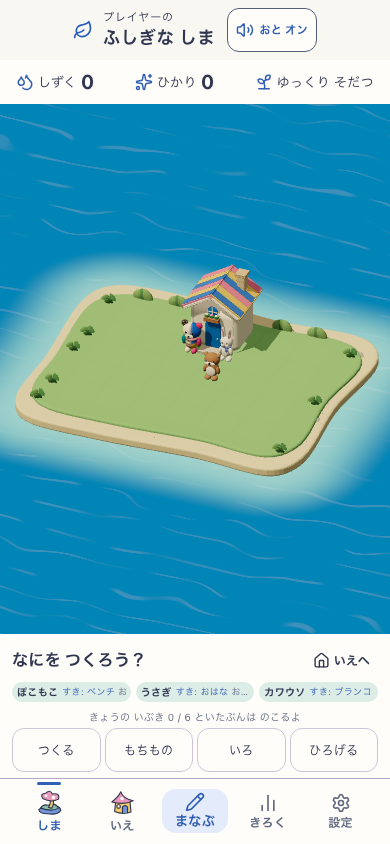
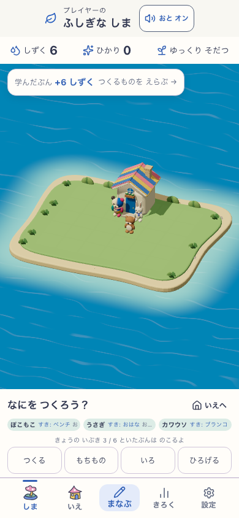
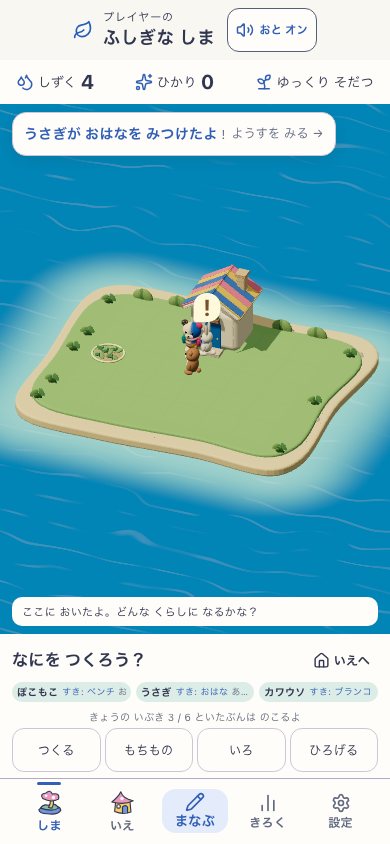
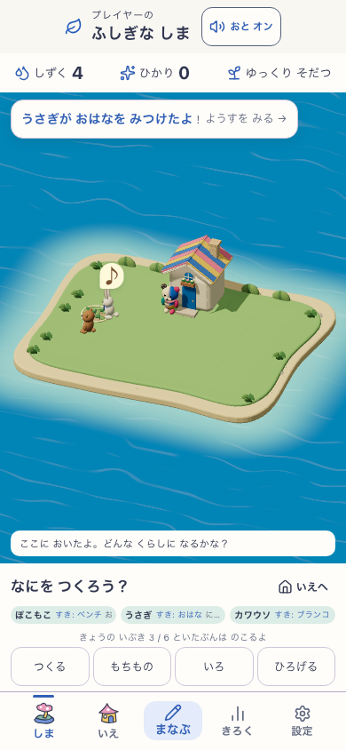
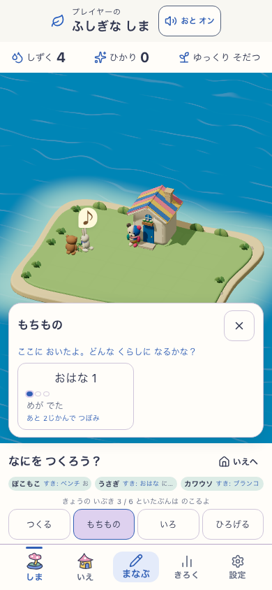
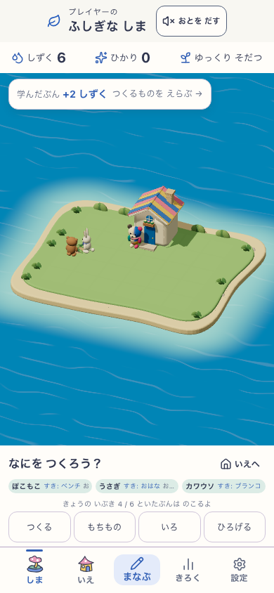
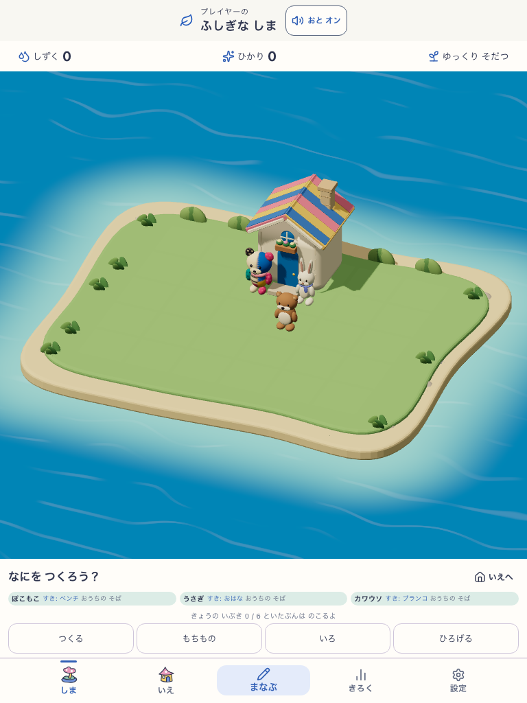
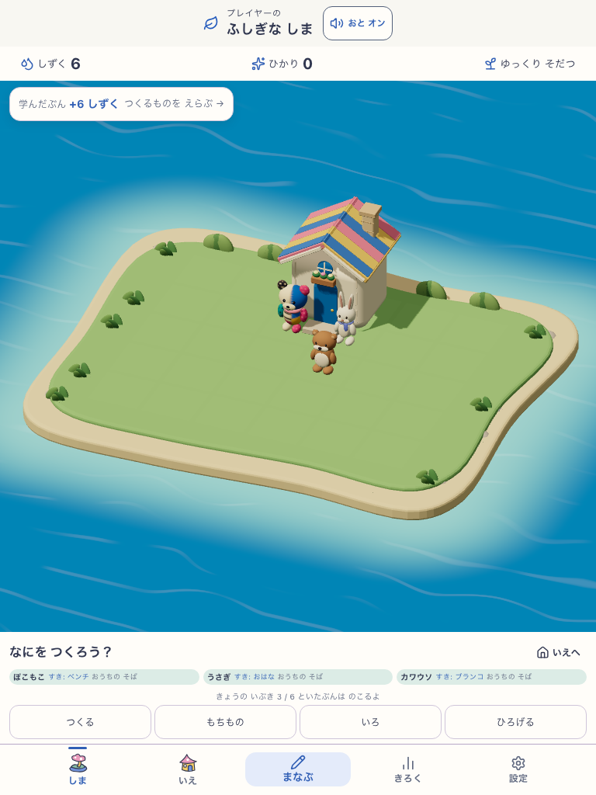
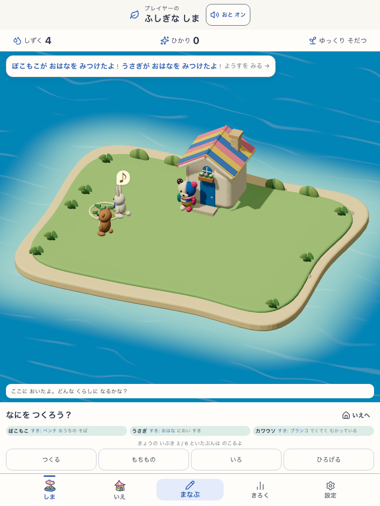
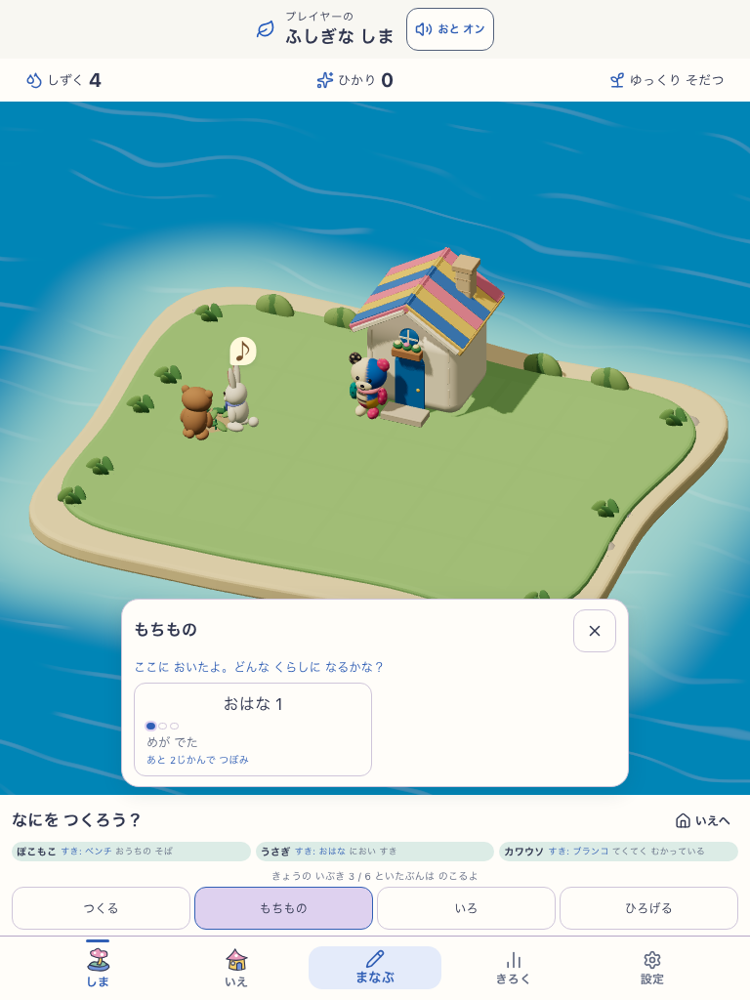
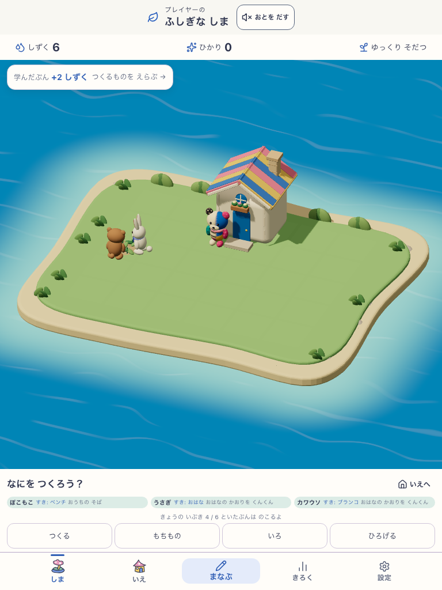
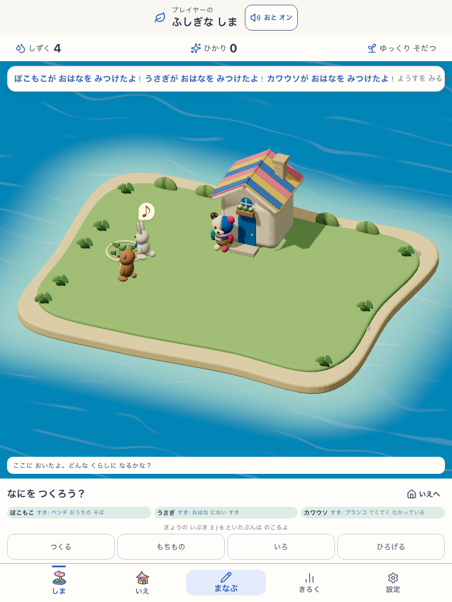
Source 5e8bd250cf2f5b6d90277749776bfe51bfa1adce · Build resident-gesture-v1:9ed46fec-2ecf-45b4-9877-8307d791c04b · mystic-island-v1 · candidate mystic-island-shore-garden-v18 · Human N=0
同じ実buildのクリティカルパス。tabletはreduced motion。返事中の最新画面を、前候補の同じ場面と並べて作者が確認した。











